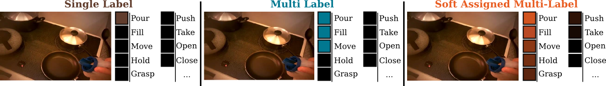

Michael Wray, Davide Moltisanti, Dima Damen

This work introduces verb-only representations for actions and interactions; the problem of describing similar motions (e.g. open door, open cupboard), and distinguish differing ones (e.g. open door vs open bottle) using verb-only labels.
Current approaches for action recognition neglect legitimate semantic ambiguities and class overlaps between verbs, relying on the objects to disambiguate interactions. We deviate from single-verb labels and introduce a mapping between observations and multiple verb labels – in order to create an Unequivocal Representation of Actions. The new representation benefits from increased vocabulary and a soft assignment to an enriched space of verb labels.
We learn these representations as multi-output regression, using a two-stream fusion CNN. The proposed approach outperforms conventional singleverb labels (also known as majority voting) on three egocentric datasets for both recognition and retrieval.
Towards an Unequivocal Representation of Actions. Michael Wray, Davide Moltisanti and Dima Damen (2018). arxiv
Improving Classification by Improving Labelling: Introducing Probabilistic Multi-Label Object Interaction Recognition. Michael Wray, Davide Moltisanti, Walterio Mayol-Cuevas and Dima Damen (2017). arxiv